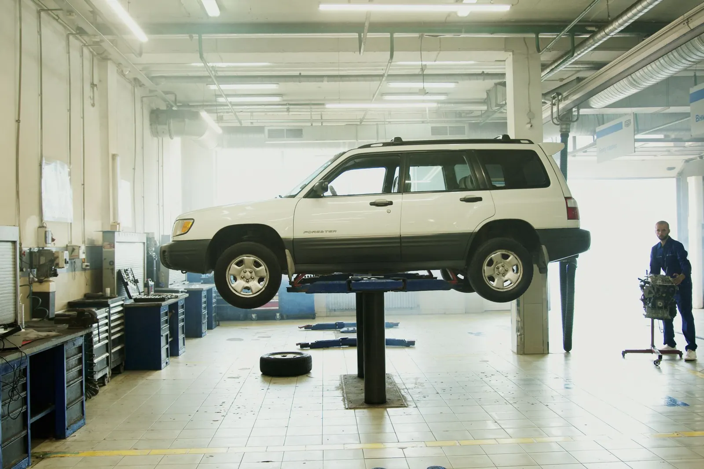
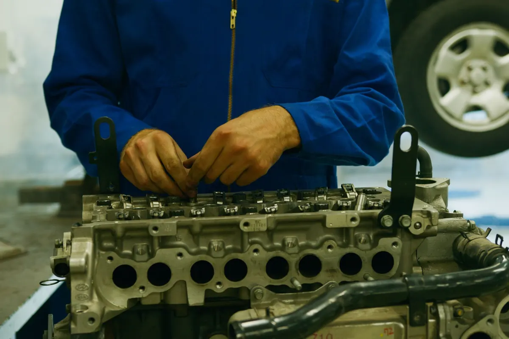
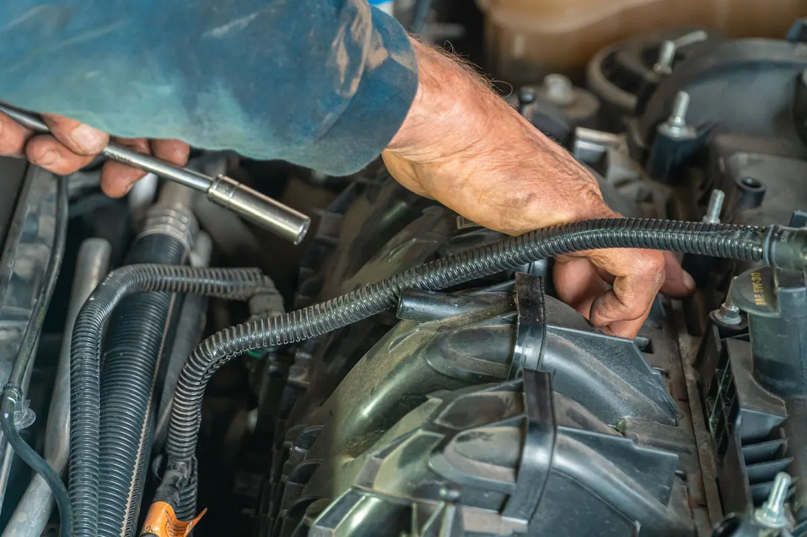

Çok markalı servis · Kepez Sanayi
Aracınız lifte çıktığında
fotoğrafı telefonunuzda.
Periyodik bakım, fren, triger ve elektrik arızası. Yapılan her işin fotoğrafı ve faturası WhatsApp'tan gelir; bir sonraki bakımı biz hatırlatırız.
Bakım · onarım · ekspertiz · Kepez Sanayi
Hizmetler ve fiyatlar
Fiyatlar temsilîdir; araç ve parçaya göre değişir.
- 01Periyodik bakım4.500 TL'dentemsilî
Yağ, filtreler, 40 nokta kontrol.
- 02Fren balatası2.400 TL'dentemsilî
Ön balata değişimi, disk kontrolü.
- 03Triger seti9.800 TL'dentemsilî
Triger kayışı, gergi ve devirdaim.
- 04Arıza tespiti750 TLtemsilî
Bilgisayarlı arıza okuma ve rapor.
- 05Klima bakımı1.600 TL'dentemsilî
Gaz dolumu, polen filtresi, dezenfeksiyon.
- 06Alım öncesi ekspertiz2.200 TL'dentemsilî
İkinci el araç için mekanik kontrol raporu.
Fiyatlar örnek işletmeye aittir, KDV dahil değildir.


Hakkımızda
Servis hakkında
2006'dan beri Kepez Sanayi'de. Dört lift, iki usta, bir elektrik ustası.
Her aracın kaydında son bakım tarihi ve kilometresi tutulur; zamanı gelince size mesaj gider.
Ekip (örnek)
- Hasan Ustamotor ve şanzıman
- Ali Ustafren ve yürüyen
- Burakoto elektrik
- Selda H.kabul ve randevu
Sık sorulanlar
Merak edilenler
Aracımı ne zaman alırım?
Periyodik bakım çoğunlukla aynı gün. İş bitince fotoğraf ve fatura WhatsApp'tan gelir.
Orijinal parça mı takıyorsunuz?
Tercihe göre orijinal ya da muadil; her ikisinin fiyatını önceden yazılı veririz.
Garanti var mı?
İşçilikte 6 ay garanti veriyoruz.
İletişim
Bize ulaşın
- AdresKepez Sanayi Sitesi, 12. Blok · Kepez / Antalya (örnek adres)
- SaatlerPzt–Cmt 08:30–19:00
- Telefon0242 ••• •• •• (örnek)
- WhatsAppasistanı deneyin ↓